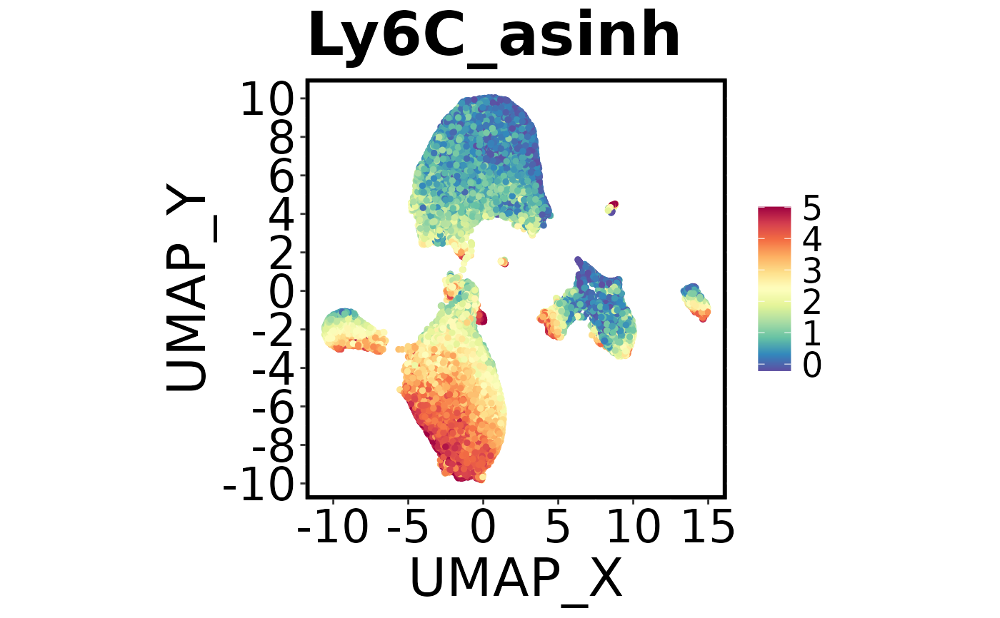
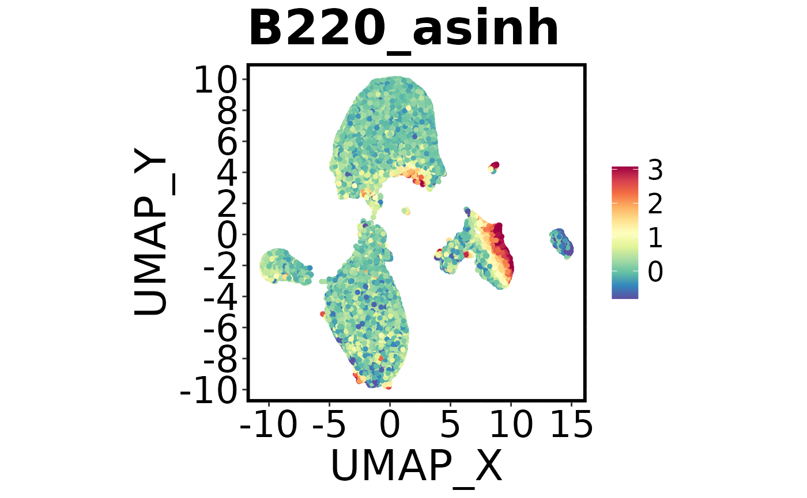
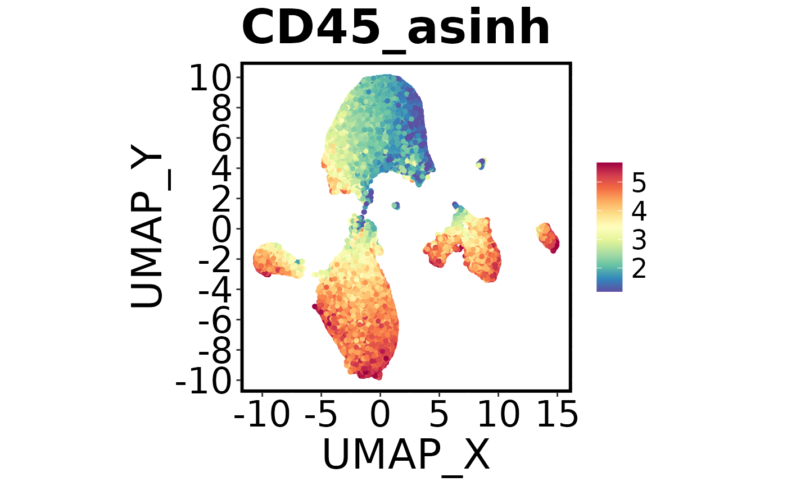
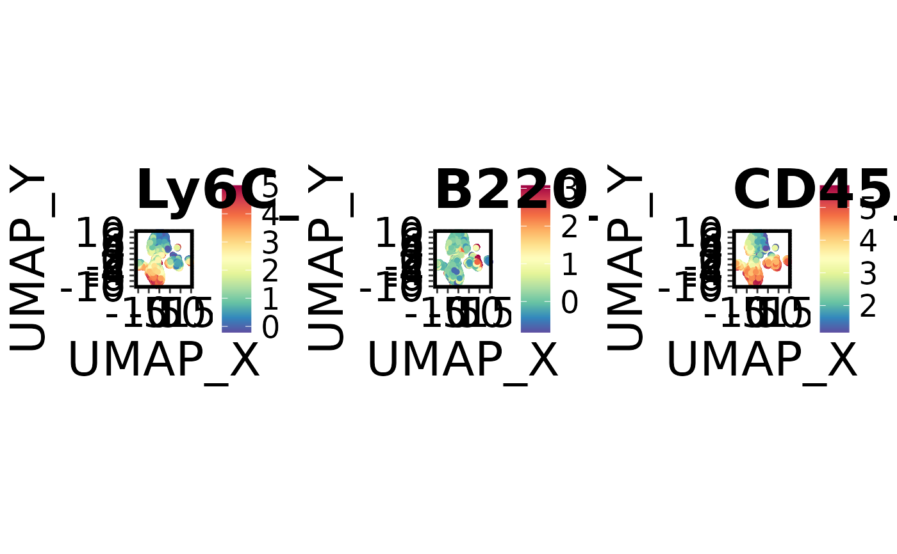

Make multiple plots for multiple columns and/or multiple sample/group/clusters
Source:R/make.multi.plot.R
make.multi.plot.RdMethod to create multiple plots for each marker. This function allows you to create a grid of plots, where the cells are plotted by a series of columns, and/or subsetted by a certain factor (e.g. one sample per plot). Makes use of Spectre functions make.colour.plot and make.density.plot.
Usage
make.multi.plot(dat, x.axis, y.axis, plot.by, divide.by, add.density,
col.type, figure.title, align.xy.by, align.col.by, colours, dot.size,
col.min.threshold, col.max.threshold, path, plot.width, plot.height,
blank.axis, save.each.plot)Arguments
- dat
NO DEFAULT. A data frame containing all the data you wish to plot
- x.axis
NO DEFAULT. X axis
- y.axis
NO DEFAULT. Y axis
- plot.by
NO DEFAULT. A vector of character names for the columns you wish to plot.
- divide.by
DEFAULT = NULL. Here you can specify a character name of a column you wish to use to divide up the dataset.
- add.density
DEFAULT = FALSE. Can specify to add a density plot at the end the series of colour plots
- hex
DEFAULT = FALSE. Whether to split the data into bins and show the average expression of the bin. Currently does not work with density plots, only for those features in the plot.by.
- hex.bins
DEFAULT = 30. Number of bins to split into. Only used if hex is TRUE.
- col.type
DEFAULT = "continuous". Can also be "factor".
- figure.title
DEFAULT = "Multi plot". Also used as the prefix for the saved file name.
- global.xy
DEFAULT = TRUE. Defines the limits for the X and Y based on the whole dataset. If FALSE, then each plot X & Y limits scale individually.
- global.col
DEFAULT = TRUE. Defines the limits for the colour axis based on the whole dataset. If FALSE, then each plot colour limit scales individually.
- align.xy.by
DEFAULT = dat. Align X and Y to a dataset. By default it will be based on the total dataset.
- align.col.by
DEFAULT = dat. Align colour to a dataset. By default it will be based on the total dataset.
- colours
DEFAULTS to 'spectral'. What colour scheme do you want to use. Only used if type = 'colour', ignored if type = 'factor'. Can be 'jet', 'spectral', 'viridis', 'inferno', 'magma', or "BuPu".
- dot.size
DEFAULT = 1. Numeric. Size of the dots.
- col.min.threshold
DEFAULT = 0.01. Numeric. Define minimum threshold for colour scale. Values below this limit will be coloured as the chosen minimum threshold.
- col.max.threshold
DEFAULT = 0.995 Numeric. Define maximum threshold for colour scale. Values above this limit will be coloured as the chosen maximum threshold.
- path
DEFAULT = getwd() – i.e. the current working directory. Path to the desired output directory
- plot.width
DEFAULT = 9.
- plot.height
DEFAULT = 7.
- blank.axis
DEFAULT = FALSE. Logical. Do you want a minimalist graph?
- save.each.plot
DEFAULT = FALSE. Logical. Do you want to save each plot?
- add.label
Logical. If TRUE and
col.type = "factor", adds labels at the centroid of each group.- fast
Logical. If TRUE, uses scattermore for faster plotting of large datasets. Note, this will reduce the resolution of the plot. This only works when
col.axisis specified and when hex = FALSE.- legend.loc
Character. Legend position: "right" (default), "bottom", "top", "left", or "none".
Author
Thomas Ashhurst, thomas.ashhurst@sydney.edu.au Felix Marsh-Wakefield, felix.marsh-wakefield@sydney.edu.au Givanna Putri
Examples
Spectre::make.multi.plot(dat = Spectre::demo.clustered,
x.axis = "UMAP_X",
y.axis = "UMAP_Y",
plot.by = c("Ly6C_asinh", "B220_asinh", "CD45_asinh"))




#> Check your working directory for a new .png called 'Multi plot.png'